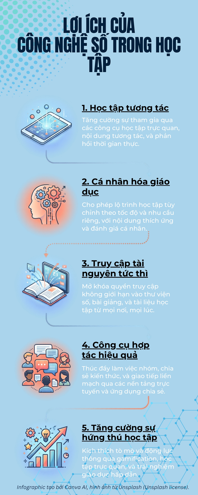

Điện toán đám mây
Lưu trữ, đồng bộ và chia sẻ tài liệu mọi lúc mọi nơi, giúp sinh viên làm việc nhóm hiệu quả và bảo mật dữ liệu tốt hơn.
Bài thực hành Lab05
Chủ đề chính
Giải pháp tiêu biểu
Họ và tên
Thạch Thị Phan Anh
MSSV
B2605329
Lớp học phần
CT005/D04
Công nghệ số đang ngày càng đóng vai trò quan trọng trong quá trình học tập, giúp sinh viên tiếp cận tri thức nhanh hơn, nâng cao hiệu quả học tập và tạo điều kiện cho sự sáng tạo, hợp tác và tự học. Từ công cụ lưu trữ trực tuyến, trí tuệ nhân tạo, đến nền tảng học tập số, các giải pháp công nghệ đã mang đến nhiều cách thức mới để học tập hiệu quả hơn, chủ động hơn và linh hoạt hơn.
Các giải pháp tiêu biểu
Lưu trữ, đồng bộ và chia sẻ tài liệu mọi lúc mọi nơi, giúp sinh viên làm việc nhóm hiệu quả và bảo mật dữ liệu tốt hơn.
AI hỗ trợ giải đáp nhanh, tóm tắt nội dung, dịch thuật, phân tích dữ liệu và khơi gợi ý tưởng sáng tạo trong học tập.
Nền tảng trực tuyến giúp kết nối giảng viên - sinh viên, học mọi lúc mọi nơi và quản lý tiến độ học tập hiệu quả.
Sản phẩm Lab05
Mở tài liệu PDF chứa nội dung nhiệm vụ thực hành đã hoàn thành.
Mở file PDFHình ảnh thực tế trong repository được hiển thị trực tiếp trên trang để minh họa nội dung công nghệ số trong học tập.

Video trực tiếp về ứng dụng công nghệ số trong học tập được nhúng vào trang web.